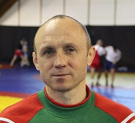

Греко-римская борьба
Игорь Петренко — жлобинский борец греко-римского стиля, мастер спорта международного класса, участник двух Олимпиад (Атланта-1996 и Сидней-2000), одна из ключевых фигур в истории жлобинской школы борьбы.
Игорь пришёл в секцию классической (греко-римской) борьбы во Дворце спорта Жлобина в 1980-х — как раз когда отделение только набирало силу. Первые шаги делал под руководством Олега Слепцова, который стоял у истоков жлобинской борьбы. Уже в юношеские годы Петренко выделялся выносливостью и тактической грамотностью — качествами, которые позже станут его «фирменными» в международных схватках.
Жлобинская школа в те годы делала ставку на жёсткую базовую подготовку и дисциплину: ежедневные двухразовые тренировки, кроссы, работа на ковре до изнеможения. Именно эта школа позволила Игорю быстро прогрессировать и попасть в республиканские сборные.
Петренко выступал в средних весовых категориях и славился тем, что умел «переиграть» соперника тактически, даже если уступал в чистой физической мощи. Его стиль — плотная работа в партере, грамотные переводы и умение держать темп до последних секунд.
Ключевые вехи карьеры: